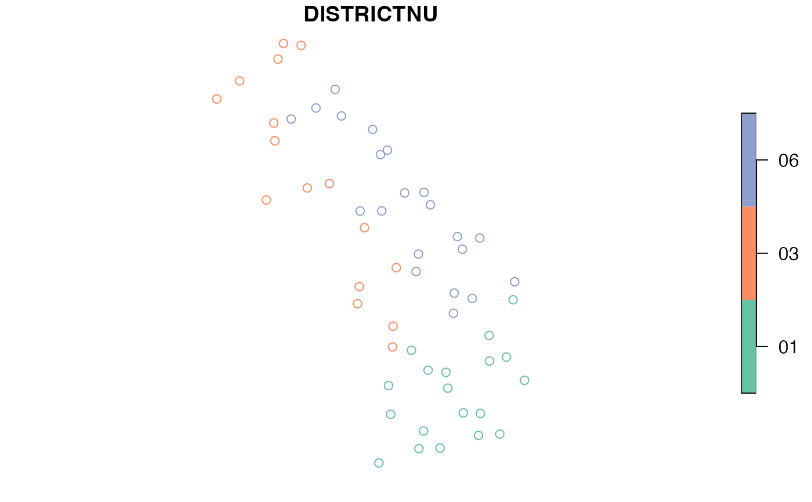

spExtractPoly.RdExtracts values from one or more polygon layers and appends to input SpatialPoints layer or data frame. Points are reprojected on-the-fly to projection of SpatialPolygons using PROJ.4 transformation parameters and rgdal spTransform function.
spExtractPoly(
xyplt,
xyplt_dsn = NULL,
xy.uniqueid = "PLT_CN",
polyvlst,
polyv_dsn = NULL,
polyvarlst = NULL,
polyvarnmlst = NULL,
keepNA = FALSE,
showext = FALSE,
savedata = FALSE,
exportsp = FALSE,
exportNA = FALSE,
spMakeSpatial_opts = NULL,
savedata_opts = NULL,
gui = FALSE
)Data frame object or String. Name of layer with xy coordinates and unique identifier. Can be layer with xy_dsn, full pathname, including extension, or file name (with extension) in xy_dsn folder.
String. Name of database where xyplt is. The dsn varies by driver. See gdal OGR vector formats (https://www.gdal.org/ogr_formats.html).
String.* Unique identifier of xyplt rows.
sf R object or String. Name(s) of polygon layers to extract values. A spatial polygon object, full path to shapefile, or name of a layer within a database.
String. Data source name (dsn) where polyvlst layers are found (e.g., *.sqlite, *.gdb, folder name). The dsn varies by driver. See gdal OGR vector formats (https://www.gdal.org/ogr_formats.html).
String vector or list. The name(s) of variable(s) to extract from polygon(s). If extracting multiple variables from more than one polygon, specify names in a list format, corresponding to polyvlst.
String vector or list. Output name(s) of variable(s) extracted from polygon(s). If extracting multiple variables from more than one polygon, specify names in a list format, corresponding to polyvlst. The number of names must match the number of variables in polyvarlst.
Logical. If TRUE, keep NA values.
Logical. If TRUE, layer extents are displayed in plot window.
Logical. If TRUE, the input data with extracted values are saved to outfolder.
Logical. If TRUE, the extracted point data are exported to outfolder.
Logical. If TRUE, NULL values are exported to outfolder.
List. See help(spMakeSpatial_options()) for a list of options. Use to convert X/Y values to simple feature (sf) coordinates.
List. See help(savedata_options()) for a list of options. Only used when savedata = TRUE. If out_layer = NULL, default = 'polyext'.
Logical. If gui, user is prompted for parameters.
SpatialPointsDataFrame object or data frame. Input point data with extracted raster values appended. For multi-part polygons, more than 1 row per point may be output.
String vector. Variable names of extracted variables.
If savedata=TRUE, outdat data frame is saved to outfolder (Default name: datext_'date'.csv). If exportsp=TRUE, the SpatialPointsDataFrame object is exported to outfolder (Default name: datext_'date'.shp). Variable names are truncated to 10 characters or less (See note below). Name changes are output to 'outfn'_newnames_'data'.csv in outfolder.
*If variable = NULL, then it will prompt user for input.
keepnull
If keepnull=FALSE, points are excluded when all extracted
variables from any one SpatialPolygons are NULL, returning the points that
fall within the ' intersecting polygons.
If exportshp=TRUE:
The writeOGR (rgdal) function is called. The ArcGIS
driver truncates variable names to 10 characters or less. Variable names are
changed before export using an internal function (trunc10shp). If Spatial
object has more than 1 record, it will be returned but not exported.
The spTransform (rgdal) method is used for on-the-fly map projection conversion and datum transformation using PROJ.4 arguments. Datum transformation only occurs if the +datum tag is present in the both the from and to PROJ.4 strings. The +towgs84 tag is used when no datum transformation is needed. PROJ.4 transformations assume NAD83 and WGS84 are identical unless other transformation parameters are specified. Be aware, providing inaccurate or incomplete CRS information may lead to erroneous data shifts when reprojecting. See spTransform help documentation for more details.
Any names in polygon layers that are the same as in xyplt are renamed to name'_1'.
# Get point data from WYplt data in FIESTA
WYplt <- FIESTA::WYplt
# Get polygon vector layer from FIESTA external data
WYbhdistfn <- system.file("extdata",
"sp_data/WYbighorn_districtbnd.shp",
package = "FIESTA")
# Extract points from polygon vector layer
xyext <- spExtractPoly(xyplt = WYplt,
polyvlst = WYbhdistfn,
xy.uniqueid = "CN",
spMakeSpatial_opts = list(xvar = "LON_PUBLIC",
yvar = "LAT_PUBLIC",
xy.crs = 4269))
#> crs.default must be in a projected CRS... using US albers
#> +proj=aea +lat_0=23 +lon_0=-96 +lat_1=29.5 +lat_2=45.5 +x_0=0 +y_0=0 +datum=NAD83 +units=m +no_defs +type=crs
#> reprojecting layer...
#> from: EPSG:4269
#> to: +proj=aea +lat_0=23 +lon_0=-96 +lat_1=29.5 +lat_2=45.5 +x_0=0 +y_0=0 +datum=NAD83 +units=m +no_defs +type=crs
#> Warning: there are 2991 null values for poly1
names(xyext)
#> [1] "spxyext" "outnames" "NAlst"
xyext$outnames
#> REGION FORESTNUMB DISTRICTNU DISTRICTNA
#> "REGION" "FORESTNUMB" "DISTRICTNU" "DISTRICTNA"
spxyext <- xyext$spxyext
head(spxyext)
#> Simple feature collection with 6 features and 22 fields
#> Geometry type: POINT
#> Dimension: XY
#> Bounding box: xmin: -943048.1 ymin: 2461728 xmax: -914104.9 ymax: 2492354
#> CRS: +proj=aea +lat_0=23 +lon_0=-96 +lat_1=29.5 +lat_2=45.5 +x_0=0 +y_0=0 +datum=NAD83 +units=m +no_defs +type=crs
#> CN INVYR STATECD CYCLE UNITCD COUNTYCD PLOT MEASYEAR RDDISTCD
#> 142 40404876010690 2012 56 3 2 3 83143 2012 6
#> 145 40404879010690 2011 56 3 2 3 80153 2011 6
#> 152 40404886010690 2012 56 3 2 3 86397 2012 NA
#> 159 40404893010690 2011 56 3 2 3 85901 2011 4
#> 160 40404894010690 2013 56 3 2 3 90221 2013 6
#> 165 40404899010690 2013 56 3 2 3 85144 2013 NA
#> NF_SAMPLING_STATUS_CD PLOT_STATUS_CD NF_PLOT_STATUS_CD NBRCND NBRCNDSAMP
#> 142 0 1 NA 2 2
#> 145 0 1 NA 1 1
#> 152 0 2 NA 1 1
#> 159 0 1 NA 1 1
#> 160 0 1 NA 1 1
#> 165 0 2 NA 1 1
#> NBRCNDFOR CCLIVEPLT FORNONSAMP PLOT_ID REGION FORESTNUMB
#> 142 2 67.5 Sampled-Forest ID560200383143 02 02
#> 145 1 66.0 Sampled-Forest ID560200380153 02 02
#> 152 0 0.0 Sampled-Nonforest ID560200386397 02 02
#> 159 1 48.0 Sampled-Forest ID560200385901 02 02
#> 160 1 2.0 Sampled-Forest ID560200390221 02 02
#> 165 0 8.0 Sampled-Nonforest ID560200385144 02 02
#> DISTRICTNU DISTRICTNA geometry
#> 142 03 Medicine Wheel Ranger District POINT (-937172.9 2492354)
#> 145 03 Medicine Wheel Ranger District POINT (-943048.1 2487710)
#> 152 03 Medicine Wheel Ranger District POINT (-928130.7 2476936)
#> 159 03 Medicine Wheel Ranger District POINT (-919787.2 2464822)
#> 160 03 Medicine Wheel Ranger District POINT (-914104.9 2465931)
#> 165 03 Medicine Wheel Ranger District POINT (-930324.7 2461728)
NAlst <- xyext$NAlst
# Plot extracted values of national forest district
plot(spxyext["DISTRICTNU"])
